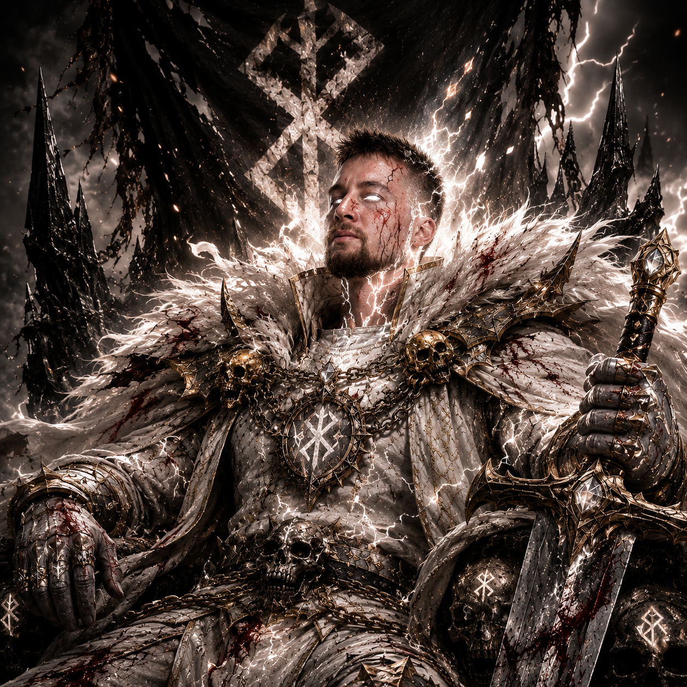
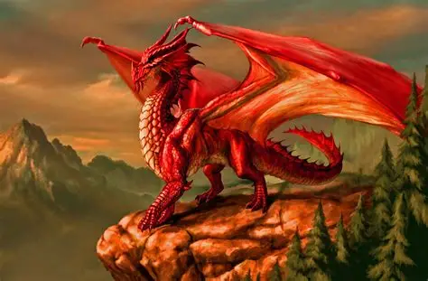
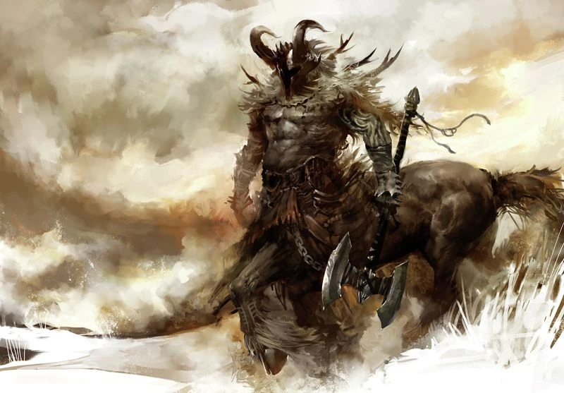
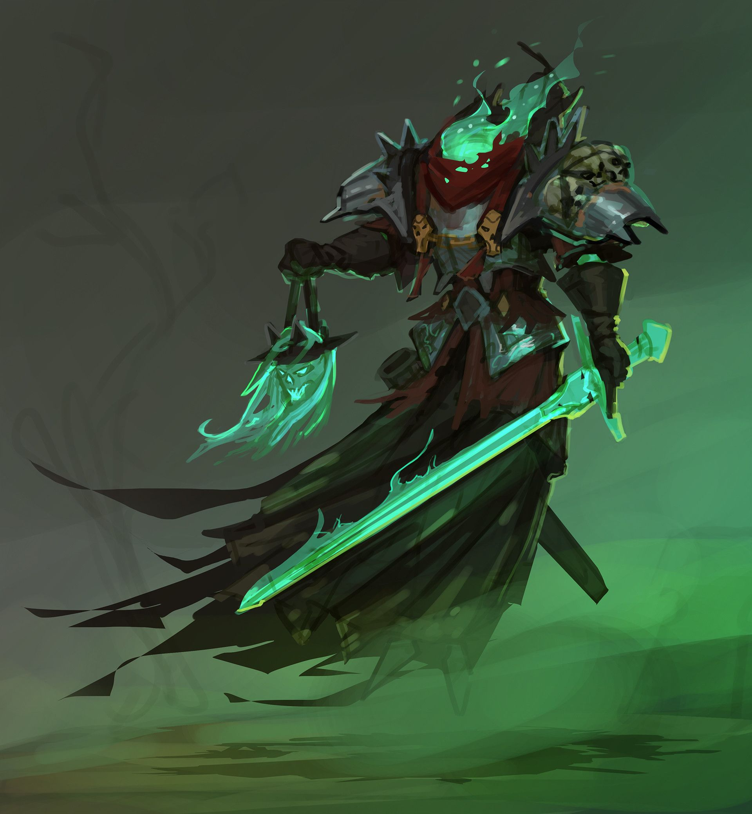
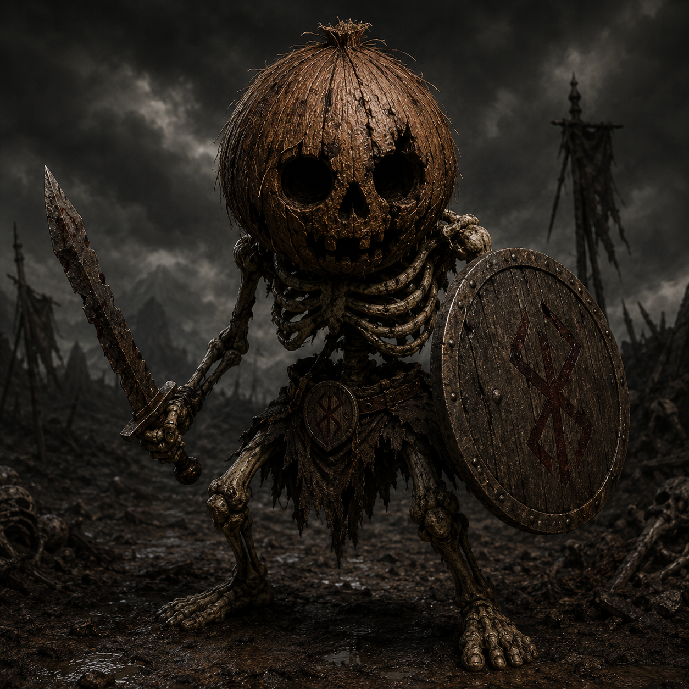
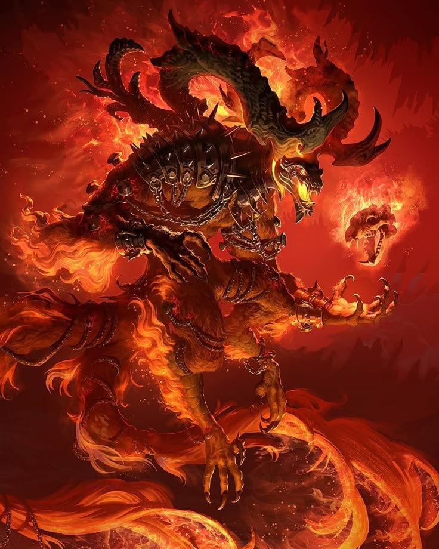
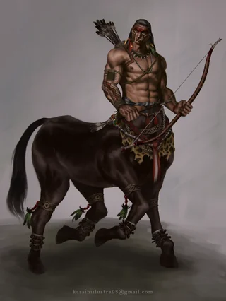

Micheat
Imperador do Arquipélago e fundador da Ordem Arcana. Dizem que foi escolhido pelo próprio Vs Code para governar os continentes e manter o equilÃbrio entre magia, tecnologia e caos.

Micheat (Furious)
Quando a ira do imperador desperta, sua forma verdadeira emerge. O poder acumulado de incontáveis linhas de código transforma Micheat em uma entidade capaz de reescrever a realidade do Arquipélago.

Khalian, Dragão do Sul Ardente
Dragão Místico do arquipélago

Quimera, Protetora da Fronteira
Possui apenas um objetivo, eliminar e proteger a passagem de todos aqueles que não são bem vindos

Tharok, Chefe dos Centauros do Leste Gelado
é o chefe da vila dos Centauros, possui seu próprio exército que age ao seu comando, a vila se localiza no Leste Gelado

Morbis, O Errante
Senhor das almas, comanda toda as almas que vagam no Oeste Sombrio do arquipélago

Gargulas
Protetoras do Castelo Esquecido do Oeste Sombrio

Esqueletos da Praia do Oeste Sombrio
Apenas apenas almas que tentam proteger sua casa, a Vila dos Coqueiros

Ragnarokh, O Inferno Rastejante
Guardião da Prisão dos Condenados

Magos
São profissionais em Magias elementares, podem ser bons ou maus

Centauros
Guardas da vila de Tharok, Chefe dos Centauros do Leste Gelado

Minotauros
Guerreiros brutais com corpo humanoide e cabeçaa de touro. Habitam labirintos e ruinas antigas cobertas de gelo do Leste Gelado do arquipélago, atacando qualquer invasor que desafie seu território.

SkarVex, Lobos da Cinza
Predadores supremos dos desertos vulcanicos do Sul Ardente, Skarvex emergem das fissuras flamejantes para caçar qualquer um que invadam seu territorio, possuem um ferrão que lança encantamentos e feitiçios de Magma Arcano